1004B24 POWER UNIT WITH MANUAL GEARBOX WITH HYDRAULIC SELECTION - R R
- Path
- Procedures > 10 ENGINE UNIT > 1004 ENGINE AND POWER UNIT > 1004B POWER UNIT ASSEMBLY > 1004B24 POWER UNIT WITH MANUAL GEARBOX WITH HYDRAULIC SELECTION - R R
- Kind
- repair procedure (removal / refitting; the operation number is the code)
- Applies to
- engines: 2.0 JTS; all production periods; only with equipment: Smart gearbox
- Interactive page
- https://sloeber94.github.io/elrnDB-aGt/en/#/125000865
Applies to: engines: 2.0 JTS; all production periods
 Removing
Removing
 Refitting
Refitting- Position the vehicle on a lift.
- Place the gear lever in neutral.
- Connect the Examiner diagnostic equipment.
- Select "Alfa Selespeed" on the Examiner.
- Select "Control Units Test" on the Examiner and select "Selespeed Marelli automatic transmission" as the system.
- Press "Active diagnosis" on the Examiner and select "Accumulator depressurization".
- Follow the procedure described on the Examiner.
- PROCEED WITH DRAINING THE HIGH PRESSURE FUEL SYSTEM FOLLOWING THE INSTRUCTIONS GIVEN BELOW.
- Start the engine.
- Keep the engine idling for 2 minutes.
- Detach the fuel pump relay.
- Wait until the engine cuts out.
- Try and start the engine: if the engine starts within 10 seconds wait for it to cut out, then try and start the engine again; if the engine does not start within 10 seconds, continue for another 5 seconds.
- Wait for the engine to cool down.
- Op. 0010T84 COOLANT FOR AIR CONDITIONING SYSTEM DEHYDRATE AND RECHARGE
- Op. 4450B12 FRONT OR REAR WHEELS (TWO) - R+R
- Op. 7055B64 LH OR RH REFLECTOR(ONE) ON REAR BUMPERS - R R
- Op. 7055B54 UNDER-ENGINE GUARD - R R
- Disconnect the rapid connector for the lower coolant outlet hose from the radiator and drain the engine cooling system.
- Reconnect the rapid connector for the radiator lower coolant outlet hose.
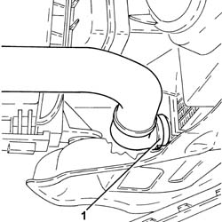
Applies to: engines: 2.0 JTS; all production periods
- Disconnect the rapid connector for the fuel supply pipe and release it from the fastening on the modular intake manifold.
- Disconnect the rapid connector for the fuel vapour recovery pipe.
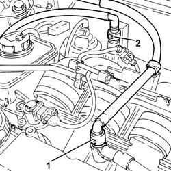
Applies to: engines: 2.0 JTS; all production periods
- Loosen the coolar and disconnect the coolant return pipe from the engine coolant reservoir.
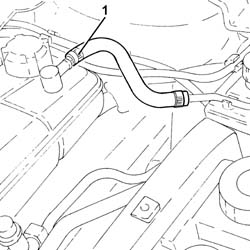
Applies to: engines: 2.0 JTS; all production periods
- Op. 1008C10 POWER UNIT UPPER REACTION LINK R R
- Op. 1048A59 PIPE from flow meter to throttle casing hose - R.R.
- Op. 5530B10 BATTERY - R+R
- Op. 5530B52 BATTERY DRIP TRAY/SUPPORT - R.R.
- Remove the plug for the gear selection electro-hydraulic system hydraulic circuit fluid reservoir.
- Drain the gear selection electro-hydraulic system hydraulic circuit fluid reservoir.
- Loosen the band and disconnect the pipe from the electro-hydraulic selection activation hydraulic unit to the fluid reservoir, hydraulic unit side.
- Undo the connector and disconnect the pipe from the pump to the gearbox electro-hydraulic selection actuator hydraulic unit, hydraulid unit side.
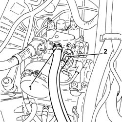
Applies to: engines: 2.0 JTS; all production periods
1. Disconnect the electrical connection for the hydraulic gear activation unit wiring.
Description | Connector | |
|---|---|---|
1 | Gearbox sensor coupling | See D79 TRANSMISSION SENSOR JUNCTION |
2. Disconnect the electrical connection from the air flow meter.
Description | Connector | |
|---|---|---|
2 | Air flow meter | See K41 AIR FLOW METER |
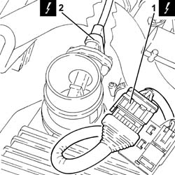
Applies to: engines: 2.0 JTS; all production periods
1. Undo the nut (1a) and disconnect the earth lead (1b).
Description | Connector | |
|---|---|---|
1b | Battery earth | See C1 BATTERY EARTH |
2. Disconnect the electrical connection from the reversing light switch.
Description | Connector | |
|---|---|---|
2 | Reversing lights switch | See I20 REVERSING LIGHTS SWITCH |
3. Disconnect the electrical connection from the electro-hydraulic selection gearbox input shaft speed sensor.
Description | Connector | |
|---|---|---|
3 | Gearbox input speed sensor | See K78 TRANSMISSION OUTPUT SPEED SENSOR |
4. Loosen the band and disconnect the cold air intake from the air filter.
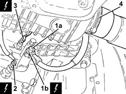
Applies to: engines: 2.0 JTS; all production periods
- Remove the air filter (1a) complete with air flow meter (1b).
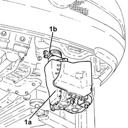
Applies to: engines: 2.0 JTS; all production periods
1. Disconnect the engine wiring electrical connections (1a) and (1b).
Description | Connector | |
|---|---|---|
1a | Front/engine coupling | See D4 FRONT/ENGINE JUNCTION |
Description | Connector | |
|---|---|---|
1b | Front/engine coupling | See D4 FRONT/ENGINE JUNCTION |
2. Loosen the band and disconnect the vacuum intake pipe from the modular intake manifold.
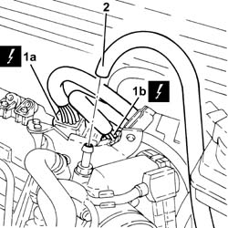
Applies to: engines: 2.0 JTS; all production periods
- Loosen the collar and disconnect the upper coolant input sleeve to the radiator, thermostat side.
- Loosen the collar and disconnec the coolant delivery pipe to the climate control system heater, thermostat side.
- Loosen the collar and disconnect the coolant outlet pipe from the climate control system heater, on the side of the rigid pipe carrying coolant into the coolant pump.
- Loosen the band and disconnect the lower coolant inlet hose from the radiator, water pump rigid coolant inlet pipe side.
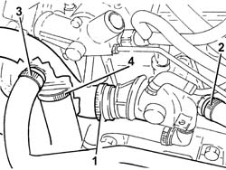
Applies to: engines: 2.0 JTS; all production periods
- Drain the power assisted steering fluid reservoir using a suitable syringe.
1. Disconnect the electrical connection from the switching control actuator enablement solenoid valve.
Description | Connector | |
|---|---|---|
1 | Variable geometry solenoid valve | See L15 VARIABLE GEOMETRY CONTROL SOLENOID |
2. Disconnect the vacuum intake pipe from the air flow switching device actuator and release it from the fastening on the latter.
3. Disconnect the air flow switching device actuator linkage.
4. Undo the bolts (4a) and remove the air flow switching device control actuator (4b).
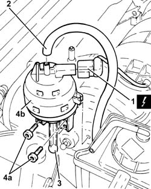
Applies to: engines: 2.0 JTS; all production periods
- Release the power assisted steering fluid reservoir supply and return pipes from the connecting band.
- Undo the bolts (1a) and move the power assisted steering fluid reservoir (1b) sideways.
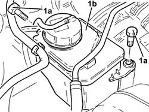
Applies to: engines: 2.0 JTS; all production periods
- Loosen the band and disconnect the power assisted steering fluid reservoir return pipe, reservoir side.
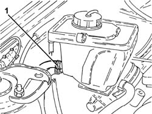
Applies to: engines: 2.0 JTS; all production periods
- Undo the connector and disconnect the supply pipe from the pump to the power assisted steering box, power assisted steering pump side.
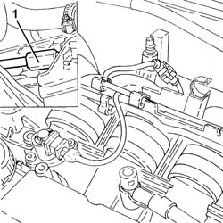
Applies to: engines: 2.0 JTS; all production periods
1. Disconnect the electrical connection for the right upper Lambda sensor.
Description | Connector | |
|---|---|---|
1 | Lambda sensor on pre-catalyzer -2 | See K16 LAMBDA SENSOR ON PRE-CATALYZER-2 |
2. Disconnect the electrical connection for the right rear Lambda sensor to the catalytic converter.
Description | Connector | |
|---|---|---|
2 | Lambda sensor on catalyzer -2 | See K18 LAMBDA SENSOR ON POST-CATALYZER 2 |
3. Loosen the band and disconnect the system supply pipe from the water pump rigid inlet pipe.
4. Undo the bolt (4a) and disconnect the inlet/outlet pipes flange (4b) from the air conditioning compressor.
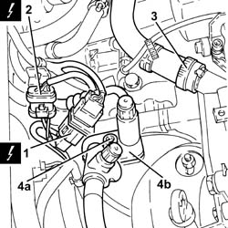
Applies to: engines: 2.0 JTS; all production periods
1. Disconnect the electrical connection for the left upper Lambda sensor.
Description | Connector | |
|---|---|---|
1 | Lambda sensor on pre-catalyzer | See K15 LAMBDA SENSOR ON PRE-CATALYZER |
2. Disconnect the electrical connection for the left rear Lambda sensor to the catalytic converter.
Description | Connector | |
|---|---|---|
2 | Lambda sensor on catalyzer | See K17 LAMBDA SENSOR ON POST-CATALYZER-2 |
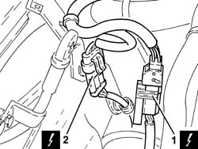
Applies to: engines: 2.0 JTS; all production periods
- Disconnect the electrical connections from the starter motor.
Description | Connector | |
|---|---|---|
- | Starter motor | See A20 STARTER' MOTOR |
- Undo the bolts (1a) and disconnect the flanges for the driveshaft constant velocity joints (1b).
- Remove the safety plates.
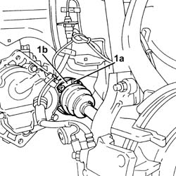
Applies to: engines: 2.0 JTS; all production periods
- Undo the nut (1a) and disconnect the steering knuckles (1b) from the upper track control arms using the tool (1c).
Description | Code | |
|---|---|---|
1c | Extractor | 1.821.169.000 |
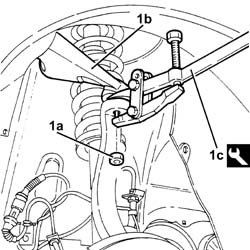
Applies to: engines: 2.0 JTS; all production periods
- Release the front brake caliper flexible pipes and the A.B.S. sensor cables from the mounting brackets.
- Move the left driveshaft as far away as possible from the differential and the right driveshaft away from the intermediate driveshaft.
- Postion a suitable footboard beneath the power unit.
- Position suitable brackets on the power unit as illustrated in the diagram.
- Support the power unit using a hydraulic hoist (2a) and the tool (2b) connected to the brackets fitted previously.
Description | Code | |
|---|---|---|
2b | Balance | 1.871.001.700 |
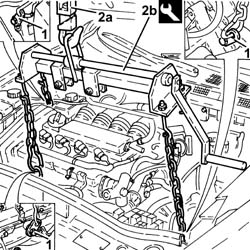
Applies to: engines: 2.0 JTS; all production periods
- Unscrew the bolt securing the power unit rigid rear support to the flexible mounting.
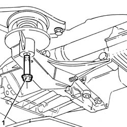
Applies to: engines: 2.0 JTS; all production periods
- Undo the bolts (1a), (1b) and remove the power unit gearbox side rigid support (1c).
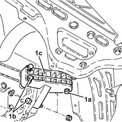
Applies to: engines: 2.0 JTS; all production periods
- Unscrew the bolt securing the timing side rigid engine support to the flexible mounting.
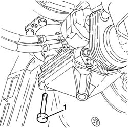
Applies to: engines: 2.0 JTS; all production periods
- Slowly lower the power unit with the hydraulic hoist until it rests on the board positioned previously.
- Hoist and support the power unit using a hydraulic hoist, then release it from the tools used for the removal.
Applies to: engines: 2.0 JTS; all production periods
Refitting
Removing- Place the power unit in the engine compartment using a hydraulic hoist fitted with a suitable tool.
Description | Code | |
|---|---|---|
- | Balance | 1.871.001.700 |
- Tighten the bolt securing the timing side rigid engine support to the flexible mounting to the recommended torque.
Fastening | Component | Ø | Value (daNm) | |
|---|---|---|---|---|
1 | Bolt | RIGID ENGINE MOUNT, TIMING SIDE | (Flexible mounting side) |
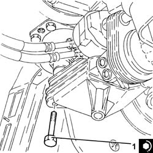
Applies to: engines: 2.0 JTS; all production periods
1. Place the power unit gearbox side rigid support (1a) in its housing and secure it tightening the bolts (1b) to the recommended torque.
Fastening | Component | Ø | Value (daNm) | |
|---|---|---|---|---|
1b | Bolt | GEARBOX SIDE RIGID SUPPORT FOR POWER UNIT | (Gearbox side) |
2. Tighten the bolt securing the power unit gearbox side rigid support to the flexible mounting to the recommended torque.
Fastening | Component | Ø | Value (daNm) | |
|---|---|---|---|---|
2 | Bolt | GEARBOX SIDE RIGID SUPPORT FOR POWER UNIT | (Flexible mounting side) |
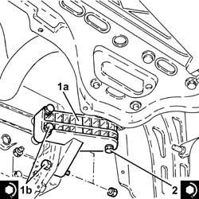
Applies to: engines: 2.0 JTS; all production periods
- Tighten the bolt securing the power unit rigid rear support to the flexible mounting.
Fastening | Component | Ø | Value (daNm) | |
|---|---|---|---|---|
1 | Bolt | POWER UNIT REAR RIGID MOUNT | (Flexible mounting side) |
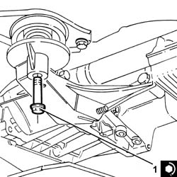
Applies to: engines: 2.0 JTS; all production periods
- Remove the tools used for refitting the power unit and put them away.
- Fasten the front brake caliper flexible pipes and the A.B.S. sensor cables to the mounting brackets.
- Connect the steering knuckles to the upper track control arms (1a) and secure them tightening the nut (1b) to the recommended torque.
Fastening | Component | Ø | Value (daNm) | |
|---|---|---|---|---|
1b | Nut | FRONT HUB STRUT | (Upper track control arm side) |
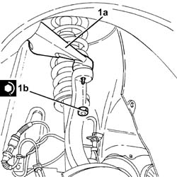
Applies to: engines: 2.0 JTS; all production periods
- Position the safety plates and tighten the new bolts (1a) for the flanges for the driveshaft constant velocity joints (1b) to the recommended torque.
Fastening | Component | Ø | Value (daNm) | |
|---|---|---|---|---|
1a | Bolt | DRIVESHAFT COMPLETE WITH JOINTS | (Intermediate driveshaft/differential internal shaft side) |
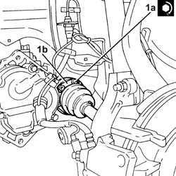
Applies to: engines: 2.0 JTS; all production periods
- Connect the electrical connections to the starter motor.
- Connect the electrical connection for the left rear Lambda sensor to the catalytic converter.
- Connect the electrical connection for the left upper Lambda sensor.
- Op. 1076B18 RIGID SECTION OF EXHAUST PIPE BETWEEN CATALYTIC CONVERTER AND SILENCER - R + R
- Connect the flange for the air conditioning compressor inlet/outlet pipes and secure it by tightening the bolt to the recommended torque.
Fastening | Component | Ø | Value (daNm) | |
|---|---|---|---|---|
- | Bolt | AIR CONDITIONING COMPRESSOR INLET/OUTLET PIPES | (Air conditioning compressor side) |
- Connect the system supply pipe to the water pump rigid inlet pipe and tighten the band.
- Connect the electrical connection for the right rear Lambda sensor to the catalytic converter.
- Connect the electrical connection for the right upper Lambda sensor.
- Op. 1088E10 RADIATOR COOLING FAN - R + R
- Connect the supply pipe from the pump to the power assisted steering box, power assisted steering pump side and tighten the connector to the recommended torque.
Fastening | Component | Ø | Value (daNm) | |
|---|---|---|---|---|
1 | Connector | PIPE BTWN PUMP + POWER STEERING BOX | (Power assisted steering pump side) |
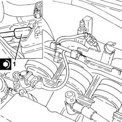
Applies to: engines: 2.0 JTS; all production periods
- Connect the power assisted steering fluid return pipe to the reservoir and tighten the band.
- Place the power assisted steering fluid reservoir in its housing and secure it using the bolts.
- Fasten the power assisted steering fluid reservoir supply and return pipes to the connecting band.
- Place the air flow switching device control actuator back in its housing and secure it using the bolts.
- Connect the air flow switching device actuator linkage.
- Connect the vacuum intake pipe from the air flow switching device actuator and secure it to the latter.
- Connect the electrical connection to the switching control actuator enablement solenoid valve.
- Connect the lower coolant inlet hose from the radiator, water pump rigid coolant inlet pipe side and tighten the band.
- Connect the coolant outlet pipe from the climate control system heater, on the side of the rigid pipe carrying coolant into the coolant pump and tighten the collar.
- Connect the coolant delivery pipe to the climate control system heater, thermostat side, and tighten the band.
- Connect the upper coolant input sleeve to the radiator, thermostat side, and tighten the band.
- Connect the vacuum intake pipe to the modular intake manifold and tighten the band.
- Connect the electrical connections for the engine wiring.
- Refit the air filter with air flow meter in its seat.
- Connect the cold air intake to the air filter and tighten the band.
- Connect the electrical connection to the electro-hydraulic selection gearbox input shaft speed sensor.
- Connect the electrical connection to the reversing light switch.
- Connect the earth lead and tighten the nut.
- Connect the electrical connection to the air flow meter.
- Connect the electrical connection for the hydraulic gear activation unit wiring.
1. Connect the pipe from the electro-hydraulic selection gearbox hydraulic actuation unit, hydraulic unit side and tighten the connector to the recommended torque.
Fastening | Component | Ø | Value (daNm) | |
|---|---|---|---|---|
1 | Connector | PIPE FROM PUMP/ACTUATOR UNIT | - | (Actuator unit side) 1.8 - 2.2 |
2. Connect the pipe from the electro-hydraulic selection activation hydraulic unit to the fluid reservoir, hydraulic unit side and tighten the band.
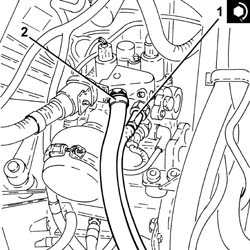
Applies to: engines: 2.0 JTS; all production periods
- Op. 0010T47 HYDRAULIC SYSTEM FLUID FOR GEARBOX WITH HYDRAULIC SELECTION CHECK LEVEL AND TOP UP IF NECESSARY
- Op. 0010T48 HYDRAULIC SYSTEM FOR GEARBOX WITH HYDRAULIC SELECTION BLEED AIR
- Op. 5530B52 BATTERY DRIP TRAY/SUPPORT - R.R.
- Op. 5530B10 BATTERY - R+R
- Op. 1048A59 PIPE from flow meter to throttle casing hose - R.R.
- Op. 1008C10 POWER UNIT UPPER REACTION LINK R R
- Connect the coolant return pipe to the engine coolant reservoir to the coolant reservoir and tighten the collar.
- Connect the rapid connector for the fuel vapour recovery pipe.
- Cconnect the rapid connector for the fuel supply pipe and secure it to the fastening on the modular intake manifold.
- Op. 1016A40 IGNITION COIL COVER ON CYLINDER HEAD- R+R
- Op. 7055B54 UNDER-ENGINE GUARD - R R
- Op. 7055B64 LH OR RH REFLECTOR(ONE) ON REAR BUMPERS - R R
- Op. 4450B12 FRONT OR REAR WHEELS (TWO) - R+R
- Op. 0010T20 COOLANT CHECK DENSITY AND TOP UP IF NECESSARY
- Op. 0010T71 POWER STEERING FLUID CHECK LEVEL AND TOP UP IF NECESSARY
- Op. 0010T84 COOLANT FOR AIR CONDITIONING SYSTEM DEHYDRATE AND RECHARGE
- Remove the vehicle from the lift.
Topics linked from this page (15)
- 0010T20 COOLANT CHECK DENSITY AND TOP UP IF NECESSARY
- 0010T47 HYDRAULIC SYSTEM FLUID FOR GEARBOX WITH HYDRAULIC SELECTION CHECK LEVEL AND TOP UP IF NECESSARY
- 0010T48 HYDRAULIC SYSTEM FOR GEARBOX WITH HYDRAULIC SELECTION BLEED AIR
- 0010T71 POWER STEERING FLUID CHECK LEVEL AND TOP UP IF NECESSARY
- 0010T84 COOLANT FOR AIR CONDITIONING SYSTEM DEHYDRATE AND RECHARGE
- 1008C10 POWER UNIT UPPER REACTION LINK R R
- 1016A40 IGNITION COIL COVER ON CYLINDER HEAD- R+R
- 1048A59 PIPE from flow meter to throttle casing hose - R.R.
- 1076B18 RIGID SECTION OF EXHAUST PIPE BETWEEN CATALYTIC CONVERTER AND SILENCER - R + R
- 1088E10 RADIATOR COOLING FAN - R + R
- 4450B12 FRONT OR REAR WHEELS (TWO) - R+R
- 5530B10 BATTERY - R+R
- 5530B52 BATTERY DRIP TRAY/SUPPORT - R.R.
- 7055B54 UNDER-ENGINE GUARD - R R
- 7055B64 LH OR RH REFLECTOR(ONE) ON REAR BUMPERS - R R